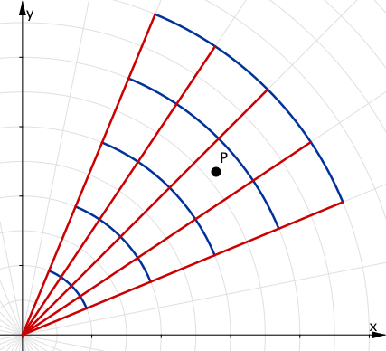

Chapter 28
By the end of this section, you should be able to answer the following questions:
|
For annular regions with circular symmetry, rectangular coordinates are difficult. It can be more convenient to use polar coordinates. The following diagram explains the relationship between the polar variables $r$, $\theta$ and the usual rectangular ones $x, y$. |
|
Drag the silder on the top-right corner
For polar coordinates, we have \[ x = r\cos \theta, \quad y = r \sin \theta. \]
Consider the volume of a solid beneath a surface $z = f(x,y)$ and above a circular region in the $x$-$y$ plane.
|
We first approximate the area of each polar rectangle as a regular rectangle. We do this as follows. Choose a point $P$ inside each polar rectangle in the polar grid. Let $P = (x^*, y^*)$ or in polar coordinates $P = (r^*, \theta^*)$ , where \[ x^* = r^*\cos \theta^*, \quad y^* = r^* \sin \theta^*. \] The area of the polar rectangle containing $P$ can be approximated as $r~\Delta \theta ~\Delta r$. |
We divide the region into a polar grid as in the following diagram:

|
Therefore the volume under the surface and above each polar rectangle can be approximated as \[ \text{vol. on box} \approx r~ \Delta \theta ~\Delta r ~f\left( r^*\cos \theta^*, r^* \sin \theta^* \right). \]
Here $f\left( r^*\cos \theta^*, r^* \sin \theta^* \right)$ is the value of the function at the point $P$, which is also the height of the box used in the approximation.
To obtain an approximation for the entire volume below the surface, we sum over the entire polar grid:
$\text{vol.} \approx \displaystyle \sum_{(\text{polar grid})} r~\Delta \theta ~\Delta r ~f\left( r^*\cos \theta^*, r^* \sin \theta^* \right)\quad \;$
$\Rightarrow \text{vol.} = \displaystyle \lim_{\Delta r, \Delta \theta \to 0} \sum_{(\text{polar grid})} r~\Delta \theta ~\Delta r ~f\left( r^*\cos \theta^*, r^* \sin \theta^* \right)$
$= \displaystyle \iint_\limits{D} f\left( r \cos \theta , r \sin \theta \right)r ~dr~d\theta.\qquad \quad\;\;\, $
The double integral in rectangular coordinates is then transformed as follows: \[ \iint_\limits{R} f(x,y)~dx~dy = \iint_\limits{S} f\left( r \cos \theta , r \sin \theta \right)r ~dr~d\theta. \]
where $D$ is the region bounded by the circle $x^2+y^2=R^2$.
🤔 Unfortunately, we cannot evaluate this integral in rectangular coordinates.
We need to use polar coordinates: $x= r\cos\theta$, $y=\sin \theta$.
This implies that $x^2+y^2 = r^2$. So \[ \iint_\limits{D}e^{-\left(x^2 + y^2 \right)}~dx~dy = \iint_\limits{D} e^{-r^2} r ~dr~d\theta. \]
The region $D$ can be described in polar coordinates. That is: $$0\leq r \leq R \;\text{ and } \;0 \leq \theta \leq 2\pi$$
Then $D = \left\{ \left( r, \theta \right) ~|~ 0\leq r \leq R,0 \leq \theta \leq 2\pi \right\}$.
| $\displaystyle\iint_{D} e^{-r^2}\cdot r ~dr~d\theta $ | $\displaystyle= \int_{\theta=0}^{\theta = 2\pi} \int_{r=0}^{r=R} e^{-r^2} \cdot r ~dr~d\theta $ |
| $\displaystyle =\left( \int_{\theta=0}^{\theta = 2\pi} d \theta \right) \left( \int_{r=0}^{r=R} e^{-r^2}r~ d r\right)$ | |
| $\displaystyle = \large \pi\left( 1- e^{-R^2}\right). $ |
bounded by the plane $z=0$ and the paraboloid $z=1-x^2-y^2$.
😃 We can evaluate this integral in rectangular and polar coordinates.
Let's use polar coordinates: $x= r\cos\theta$, $y=\sin \theta$.
This implies that our surface is defined as $1-x^2-y^2 = 1-r^2$, and the domain $D$ is region inside the circle \[ x^2+y^2=1 \] which is determined by intersecting $z=0$ and $z=1-x^2-y^2.$
Thus we have that $$0\leq r \leq 1 \;\text{ and } \;0 \leq \theta \leq 2\pi$$
So $D = \left\{ \left( r, \theta \right) ~|~ 0\leq r \leq 1,0 \leq \theta \leq 2\pi \right\}$.
| $\displaystyle \text{Volume}$ | $\displaystyle=\iint_{D} \left(1-x^2-y^2 \right)dA $ $\displaystyle= \iint_{D} \left(1-r^2 \right)r ~dr~d\theta $ |
| $\displaystyle =\int_{\theta=0}^{\theta = 2\pi} \int_{r=0}^{r=1} \left(1-r^2 \right)r ~dr~d\theta $ | |
| $\displaystyle =\left( \int_{\theta=0}^{\theta = 2\pi} d \theta \right) \left( \int_{r=0}^{r=1} \left(r-r^3 \right) d r\right)$ $\displaystyle =\large \frac{\pi}{2} . $ |
of the solid that lies under the paraboloid $z=x^2+y^2$ and
inside the cylinder $x^2+y^2=2x$, for $z\geq 0$.
First, we need to find the boundary.
If we complete the square in $x^2+y^2=2x$, we obtain \[ (x-1)^2+y^2=1. \]
This is the cylinder centred at $(1,0)$ with radius $1$. In this example the domain is defined by the expression \[ x^2+y^2=2x. \]
Again it is simpler to use polar coordinates.
Thus, substituing the values $x= r\cos\theta$ and $y=r\sin \theta$ in $$x^2+y^2=2x,$$ we get $r^2\cos ^2\theta +r^2\sin ^2\theta = 2r \cos \theta$. That is $$ r^2 = 2r \cos \theta \Rightarrow r = 2 \cos \theta \qquad (r\neq 0).$$
Thus $$D = \left\{ \left( r, \theta \right) ~|~ 0\leq r \leq 2\cos \theta, -\frac{\pi}{2} \leq \theta \leq \frac{\pi}{2} \right\}.$$
Then we have that
| $\displaystyle\text{V}$ | $\displaystyle =\iint_{D} \left(x^2+y^2 \right)dA $ $\displaystyle= \iint_{D} r^2r ~dr~d\theta $ |
| $\displaystyle =\int_{\theta=-\frac{\pi}{2}}^{\theta = \frac{\pi}{2}} \int_{r=0}^{r=2\cos \theta} r^3 ~dr~d\theta $ | |
| $\displaystyle =\int_{\theta=-\frac{\pi}{2}}^{\theta = \frac{\pi}{2}} \left[ \frac{r^4}{4} \Bigg|_{r=0}^{r=2\cos \theta} \right] d\theta $ $\displaystyle = 4 \int_{\theta=-\frac{\pi}{2}}^{\theta = \frac{\pi}{2}} \cos^4 \theta~ d\theta $ | |
| $\displaystyle = 4 \int_{\theta=-\frac{\pi}{2}}^{\theta = \frac{\pi}{2}} \left( \frac{3}{8} + \frac{1}{2} \cos 2 \theta + \frac{1}{8} \cos 4 \theta \right) d\theta $ | |
| $\displaystyle =4\left[ \left( \frac{3}{8}\theta + \frac{1}{4}\sin 2\theta +\frac{1}{32} \sin 4 \theta \right) \Bigg|_{\theta=-\frac{\pi}{2}}^{\theta = \frac{\pi}{2}} \right]$ $\displaystyle = \large \frac{3\pi}{2} .$ |